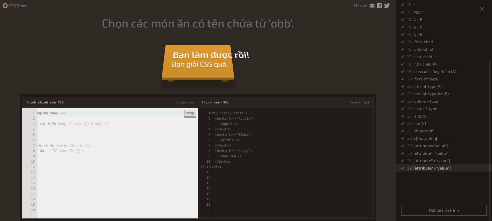
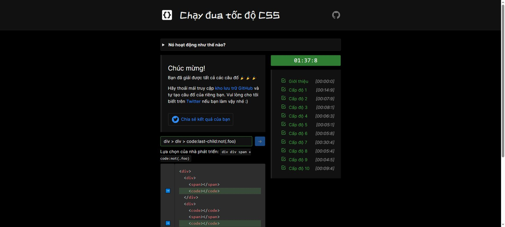

Bài 1 — Hai trò chơi CSS selector
Đã hoàn thành ngày 11/11/2026: CSS Diner 32/32 màn; CSS Speedrun Intro và 10/10 màn.
Minh chứng gồm 43 ảnh sau từng màn/phần và 2 ảnh xác nhận cuối. Trợ lý AI đã nhập selector, gửi và chờ trò chơi chấp nhận qua giao diện gốc; nhật ký ghi rõ phần hỗ trợ này. Sinh viên cần thực hành lại để nắm vững cách chọn phần tử.
Nhật ký selector · Kiểm chứng và hash ảnh · Cách đọc minh chứng
CSS Diner
Mở trò chơi gốc. Dấu kiểm xanh trong menu xác nhận màn đã được chấp nhận; ảnh được chụp trong lúc trò chơi chuyển sang màn tiếp theo.

| Màn | Selector đã được chấp nhận | Giải thích | Minh chứng |
|---|---|---|---|
| 1 | plate | Chọn theo tên thẻ plate. | Xem ảnh |
| 2 | bento | Chọn theo tên thẻ bento. | Xem ảnh |
| 3 | #fancy | Chọn ID fancy. | Xem ảnh |
| 4 | plate apple | Chọn apple là hậu duệ của plate. | Xem ảnh |
| 5 | #fancy pickle | Chọn pickle trong phần tử có ID fancy. | Xem ảnh |
| 6 | .small | Chọn class small. | Xem ảnh |
| 7 | orange.small | Kết hợp tên thẻ orange với class small. | Xem ảnh |
| 8 | bento orange.small | Kết hợp hậu duệ và class. | Xem ảnh |
| 9 | plate, bento | Gộp hai selector bằng dấu phẩy. | Xem ảnh |
| 10 | * | Chọn tất cả phần tử. | Xem ảnh |
| 11 | plate * | Chọn mọi hậu duệ của plate. | Xem ảnh |
| 12 | plate + apple | Chọn apple đứng ngay sau plate cùng cha. | Xem ảnh |
| 13 | bento ~ pickle | Chọn pickle đứng sau bento cùng cha. | Xem ảnh |
| 14 | plate > apple | Chọn apple là con trực tiếp của plate. | Xem ảnh |
| 15 | orange:first-child | Chọn orange là phần tử con đầu tiên. | Xem ảnh |
| 16 | plate :only-child | Chọn phần tử con duy nhất nằm trong plate. | Xem ảnh |
| 17 | .small:last-child | Chọn phần tử class small đồng thời là con cuối. | Xem ảnh |
| 18 | plate:nth-child(3) | Chọn plate ở vị trí con thứ 3. | Xem ảnh |
| 19 | bento:nth-last-child(3) | Chọn bento ở vị trí thứ 3 khi đếm từ cuối. | Xem ảnh |
| 20 | apple:first-of-type | Chọn apple đầu tiên trong các phần tử cùng loại. | Xem ảnh |
| 21 | plate:nth-of-type(even) | Chọn plate có vị trí cùng loại chẵn. | Xem ảnh |
| 22 | plate:nth-of-type(2n+3) | Chọn các plate thứ 3, 5, 7 và tiếp theo. | Xem ảnh |
| 23 | apple:only-of-type | Chọn apple duy nhất trong nhóm cùng loại của cha. | Xem ảnh |
| 24 | apple:last-of-type, orange:last-of-type | Chọn apple cuối và orange cuối theo loại. | Xem ảnh |
| 25 | bento:empty | Chọn bento rỗng. | Xem ảnh |
| 26 | apple:not(.small) | Chọn apple không có class small. | Xem ảnh |
| 27 | [for] | Chọn phần tử có thuộc tính for. | Xem ảnh |
| 28 | plate[for] | Chọn plate có thuộc tính for. | Xem ảnh |
| 29 | [for="Vitaly"] | Chọn giá trị thuộc tính for chính xác Vitaly. | Xem ảnh |
| 30 | [for^="Sa"] | Chọn giá trị for bắt đầu bằng Sa. | Xem ảnh |
| 31 | [for$="ato"] | Chọn giá trị for kết thúc bằng ato. | Xem ảnh |
| 32 | [for*="obb"] | Chọn giá trị for chứa obb. | Xem ảnh |


CSS Speedrun
Mở trò chơi gốc. Đã vượt Intro và 10 màn; đồng hồ kết quả hiển thị 01:37:8 trong lượt thao tác của trợ lý.

| Màn | Selector đã được chấp nhận | Giải thích | Minh chứng |
|---|---|---|---|
| Intro | li:first-child | Chọn li là con đầu tiên. | Xem ảnh |
| 1 | p:not(.foo) | Loại p mang class foo. | Xem ảnh |
| 2 | li:nth-child(2n+3) | Chọn li thứ 3, 5, 7 bằng công thức 2n+3. | Xem ảnh |
| 3 | div > * | Chọn tất cả con trực tiếp của div. | Xem ảnh |
| 4 | [data-item] | Chọn phần tử có data-item. | Xem ảnh |
| 5 | p ~ span | Chọn span là anh em đứng sau p. | Xem ảnh |
| 6 | :enabled | Chọn điều khiển form đang được bật. | Xem ảnh |
| 7 | #one, #two, #five, #six, #nine | Gộp năm ID đúng theo các mũi tên; dùng gợi ý của trò chơi. | Xem ảnh |
| 8 | a + span | Chọn span ngay sau a cùng cha. | Xem ảnh |
| 9 | #foo > .foo | Chọn class foo là con trực tiếp của ID foo. | Xem ảnh |
| 10 | div > div > code:last-child:not(.foo) | Chọn code cuối trong các div con, loại class foo. | Xem ảnh |


Kiến thức vận dụng
Selector theo tên thẻ, class, ID; gộp selector; quan hệ hậu duệ, con trực tiếp, anh em; pseudo-class theo vị trí và trạng thái; selector thuộc tính chính xác, bắt đầu, kết thúc và chứa chuỗi. Cần phân biệt nth-child đếm mọi con với nth-of-type chỉ đếm các phần tử cùng loại.